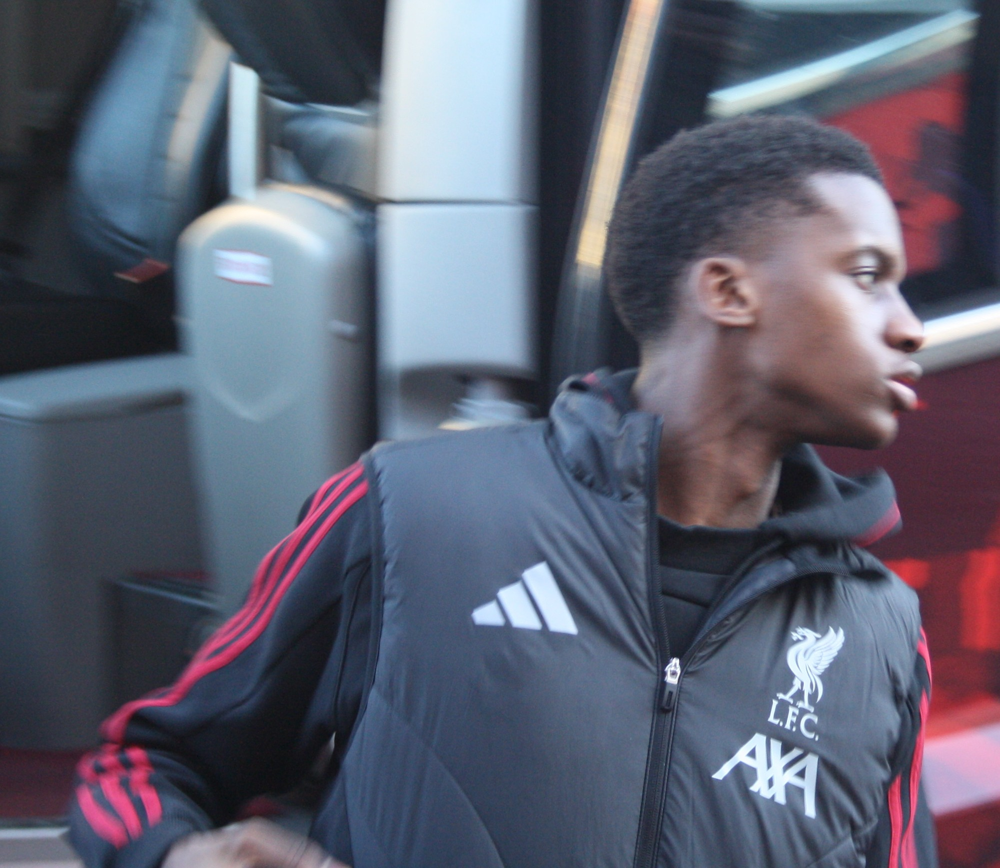

PITCHKEEP
Premier League ranks
Player File · MID LIV · Premier #428

Trey Nyoni
MID · Liverpool · age 19 · £4.8m
2025/26 Premier League
| Year | Starts | Min | G | A | xG | xA | CS | GC | Bonus | YC | Sleeper | FPL |
|---|---|---|---|---|---|---|---|---|---|---|---|---|
| 2025/26 | 1 | 241 | 0 | 0 | 0.14 | 0.26 | 0 | 5 | 0 | 0 | 13.8 | 9 |
Plus
- 13.8 Sleeper BPL 2025 points (Pitch #255).
Minus
- Consensus 335.0 vs Sleeper #255 - the industry is cooler than last year's box score.
- Board spread 255-323 (Sleeper BPL 2025 to FPL 2025/26 Points).
PitchKeep Take · The Premier
Trey Nyoni is a midfielder for Liverpool, age 19, £4.8m. The Premier ranks him 428th overall by splitting Sleeper BPL 2025 (#255, 13.8 points) with the consensus of 3 other boards (335.0). Last year's Sleeper line ran 80 spots ahead of the expert/FPL mix. The third list keeps some of that production bump and refuses to throw the other boards out. That is the whole point of not just republishing The Pitch.
The 2025/26 Premier League line is 1 starts and 241 minutes, 0 goals and 0 assists, 7 tackles and 17 CBI. Official FPL scored it at 9 points (1.0 per match). Sleeper's table turned the same counting stats into 13.8. Midfielders get 9 a goal, 6 an assist, and 1 a clean sheet, plus a full tackle/CBI stream. That is why a six who plays every week can outrank a ten-goal winger who sits.
Underlying: 0.14 xG, 0.26 xA, 0.4 xGI. Role at Liverpool is the 2026/27 question sitting under the 2025/26 number. 1 starts is a starter. Anything under 25 starts is a rotation warning we already priced. Minutes are the skill that survives a finishing regression. The friendliest board is Sleeper BPL 2025 at 255; the coldest is FPL 2025/26 Points at 323.
Market: £4.8m, 4 boards on the file. Price is the FPL tax, not the rank. The Premier is who produced and who the boards still believe. FPL's own EP-next is 1.0. ICT 10.7.
Instruction: he is on the 400, which is already a statement, and he is not a star. Stash in Sleeper if the minutes are real. Do not let a Pitch screenshot make you start him over a Premier top-80. Nearby on The Premier: João Pedro, Jaouen Hadjam, Ben Chilwell. Versus The Pitch (Sleeper-only #255), the hybrid moves him down to #428. That move is the third list doing its job.
Age 19 is the other half of a hybrid. The 2025/26 counting line is one season. The Athletic-style youth lean on this board exists specifically so a Liverpool kid does not get stuck behind a 32-year-old who had a nice bonus year. Sleeper still has to see the minutes. 1 starts is the beginning of a case, not the end of one.
How to use the file: The Pitch is the Sleeper-only 400 (he is #255 there). The Premier is the 50/50 with every other board we track. Attack, Midfield, Defence, and Keepers re-rank the same Sleeper table by position. BK Value on this page follows The Premier when you are on the hybrid calculator and The Pitch when you are on the Sleeper calculator. Same curve either way - 12,000 at 1.01.
Sleeper vs FPL
Same 2025/26 line, two scoring tables
Board graph
Spread 255-323 · 4 sources
Tape · 2025/26 Premier League
TREY NYONI BEST SEASON AT LIVERPOOL 2025/26 HIGHLIGHTS | GOALS, ASSISTS & DRIBBLING SKILLS
Every Board
Spread 255-323 · 4 sources
| Source | Rank |
|---|---|
| Sleeper BPL 2025 | 255 |
| FPL xGI | 283 |
| FPL ICT Index | 320 |
| FPL 2025/26 Points | 323 |
PK News
All players · The Premier · The Pitch · PK News · Calculator